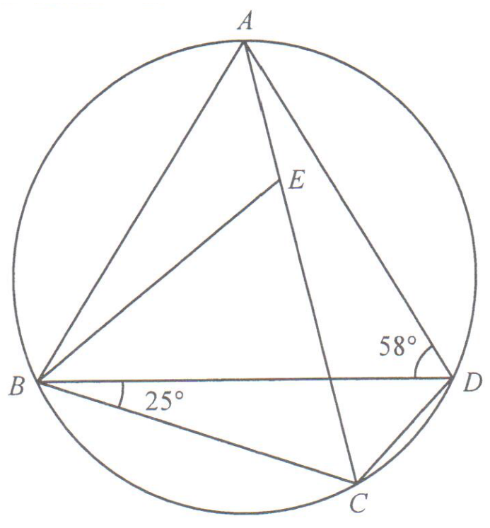

Topic 11 · Geometry — Circle properties, isosceles triangles & angle sum of triangle

Since $AB = AD$, triangle $ABD$ is isosceles with base $BD$. Hence the base angles are equal:
$$\angle ABD = \angle ADB = 58^\circ$$
Also, $ABCD$ is a cyclic quadrilateral, so opposite angles are supplementary:
$$\angle ABC + \angle ADC = 180^\circ$$
Split the two angles at $B$ and $D$:
$$\angle ABC = \angle ABD + \angle DBC = 58^\circ + 25^\circ = 83^\circ$$
$$\angle ADC = \angle ADB + \angle BDC = 58^\circ + \angle BDC$$
Substitute into the cyclic-quadrilateral relation:
$$83^\circ + 58^\circ + \angle BDC = 180^\circ$$
$$141^\circ + \angle BDC = 180^\circ$$
$$\angle BDC = 180^\circ - 141^\circ = \boxed{39^\circ}$$
Angles subtended by the same arc $BC$ at the circumference are equal:
$$\angle BEC = \angle BDC = 39^\circ \quad\text{(same segment)}$$
Also, angles in the same segment on arc $AB$ give:
$$\angle BCA = \angle BDA = 58^\circ$$
In triangle $BCE$, $BC = CE$, so the base angles at $B$ and $E$ are equal:
$$\angle CBE = \angle BEC$$
The angle sum of $\triangle BCE$ gives:
$$2\angle BEC + \angle BCE = 180^\circ$$
Note $\angle BCE = \angle BCA = 58^\circ$ (same angle at $C$), and $\angle BEC = 61^\circ$ from the working below.
$$\angle BEC = \frac{180^\circ - 58^\circ}{2} = \frac{122^\circ}{2} = 61^\circ$$
Angles around point $B$ along line $BE$ split $\angle ABC$ into $\angle ABE$ and $\angle EBC$:
$$\angle ABE = \angle ABC - \angle EBC$$
But $\angle EBC = \angle BEC = 61^\circ$ (from the isosceles triangle), and $\angle ABC = 83^\circ$ (Step 2):
$$\angle ABE = 83^\circ - 61^\circ = 22^\circ$$